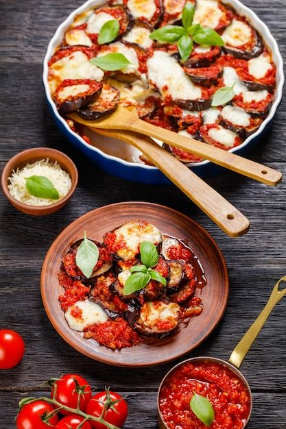

| Imagem | Prato | Descrição | Preço |
|---|---|---|---|
| Tábua de Frios | É uma peça elegante e versátil, perfeita para servir seus queijos, embutidos e petiscos favoritos com estilo e sofisticação | R$219,90 | |
| Patê de Frango | Utiliza frango desfiado cozido como base, combinado com maionese e requeijão para criar uma textura cremosa e suave. | R$79,90 | |
|  | Antepasto de Beringela | Simples e ao mesmo tempo surpreendente, ideal para uma entrada especial. Perfeito para acompanhar torradinhas, rico em sabor e textura. | R$98,00 |